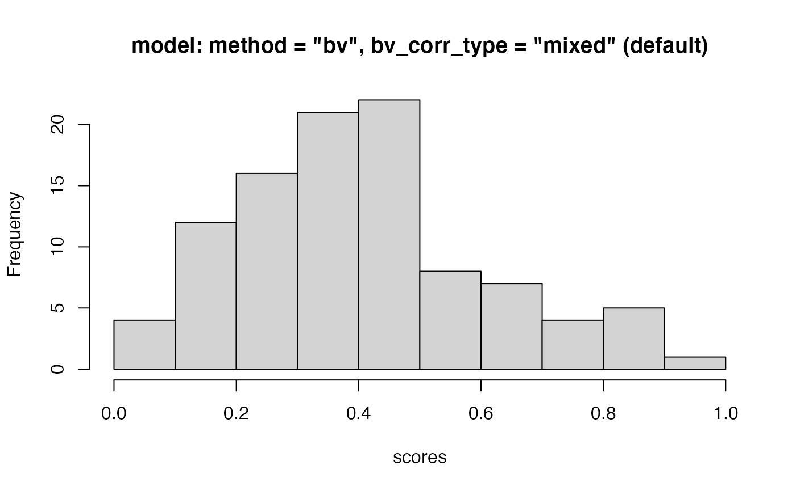

calculates synthetic scores of multiple deprivation from unidimensional indicators and/or basic items of deprivation. The scores are weighted sums of the individual indicators / items taking values on the [0,1] range. Several alternative weighting methods are available, notably Betti & Verma's (1998) double-weighting method.
mdepriv( data, items, sampling_weights = NA, method = c("cz", "ds", "bv", "equal"), bv_corr_type = c("mixed", "pearson"), rhoH = NA, wa = NA, wb = NA, user_def_weights = NA, score_i_heading = "score_i", output = c("view", "all", "weighting_scheme", "aggregate_deprivation_level", "summary_by_dimension", "summary_by_item", "summary_scores", "score_i", "sum_sampling_weights", "data", "items", "sampling_weights", "wa", "wb", "rhoH", "user_def_weights", "score_i_heading") )
Arguments
| data | a |
|---|---|
| items | a character string vector or |
| sampling_weights | a character string corresponding to the column heading of a numeric variable within the argument |
| method | a character string selecting the weighting scheme.
Available choices are |
| bv_corr_type | a character string selecting the correlation type if |
| rhoH | numeric. Permits setting |
| wa, wb | two single character strings providing alternative, more flexible ways to select the weighting schemes.
Weights are computed as the product of two terms as in the Betti-Verma scheme. |
| user_def_weights | a numeric vector or |
| score_i_heading | a character string (default: |
| output | a character string vector selecting the output.
Available multiple choices are |
Value
a list or a single object according to the argument output. Possible output elements:
"view"(default) composes alistincluding"weighting_scheme","aggregate_deprivation_level","summary_by_dimension","summary_by_item"and"summary_scores"."all"delivers alistwith all possibleoutputelements."weighting_scheme"a character string returning the weighting scheme chosen by the argumentmethod, the argumentswaandwb, or the argumentuser_def_weights, respectively."aggregate_deprivation_level"a single numeric value in the [0,1] range displaying the aggregate deprivation level."summary_by_dimension"adata.framecontaining the variables:Dimension(dimension names),N_Item(number of items per dimension),Index(within-dimension index),Weight(dimension weights),Contri(dimension contribution),Share(dimension relative contribution). If the user did not specify two or more dimensions (groups of items)"summary_by_dimension"is dropped from the output, unless it is explicitly requested as an element of the argumentoutput."summary_by_item"adata.framecontaining variables:Dimension(dimension names),Item(item names),Index(item means),Weight(item weights),Contri(item contributions),Share(relative item contributions). The columnDimensionis dropped unless at least two dimensions (groups of items) are specified or if"summary_by_dimension"is explicitly requested as an element of the argumentoutput."summary_scores"adata.framecontaining these statistics of"score_i":N_Obs.(number of observations),Mean(mean),Std._Dev.(standard deviation),Min(minimum),Max(maximum)."score_i"a numeric vector returning the score for each observation."sum_sampling_weights"a numeric value equal to the sum of sampling weights. If the argumentsampling_weightsis unspecified,NAis returned."data"adata.frameincluding the argumentdataas well as a merged column containing the scores (default heading"score_i", which can be alter by the argumentscore_i_heading)."items"a namedlistof one or more character vectors returning the argument items grouped as dimensions. If no dimensions were specified alistwith only one vector is returned. The list can be re-used as a template for the argument"items"in the functionsmdeprivandcorr_matwithout needing to priorunlist."sampling_weights"single character strings returning the specification of the argumentsampling_weights, if unspecifiedNA."wa", "wb"two single character strings giving the weighting scheme for the 1st, respectively the 2nd weighting factor. If the argumentuser_def_weightsis specified,NA's are returned."rhoH"a numeric value giving the effective rhoH. For weighting schemes not relying onrhoH, NA is returned."user_def_weights"a namedlistof one or more numeric vectors returning the argumentuser_def_weightsgrouped as dimensions. The names of thelist's elements are identical with those of the output"items". If the argumentuser_def_weightsis unspecified, NA is returned."score_i_heanding"single character strings returning the specification of the argumnentscore_i_heanding.
Details
mdepriv is an adaptation for R of a homonymous community-contributed Stata command developed by
Pi Alperin & Van Kerm (2009)
for computing synthetic scores of multiple deprivation from unidimensional indicators and/or basic items of deprivation.
The underlying literature and algebra are not recapitulated here.
They are documented in Pi Alperin & Van Kerm (2009).
There are minor differences vis-a-vis the predecessor in Stata, pointed out in the
vignette("what_is_different_from_stata.html").
The scores are weighted sums of the individual indicators / items. Both the items and the scores are limited to the [0, 1] range, and the item weights automatically sum to 1. As customary in deprivation research, all indicators / items require negative orientation (i.e., higher values are less desirable). In preparation, any item with values on [0, max], where max > 1, has to be transformed, using a suitable transformation. The choice of transformation function is dictated by substantive concerns. With \(i\) indexing the \(i-th\) observation and \(j\) indexing the \(j-th\) item, and all \(xij\) >= 0, plausible functions are:
\(yij = xij / (theoretical maximum of xj)\), particularly if all \(xj\) to be transformed have natural scales.
\(yij = xij / (c * mean(xj))\) in the absence of natural scales or theoretical maxima, with \(c >\) 1 a constant identical for all \(xj\) and chosen large enough so that all \(max(yj) <=\) 1.
the asymptotic \(yij = (xij / mean(xj)) / (1 + (xij / mean(xj)))\), which implies \(mean(yj) =\) 0.5 and \(max(yj)\) < 1 for all \(yj\)
and many others.
The multiplicative re-scaling (first two examples) preserves the coefficient of variation, an important aspect of item discrimination; in the third example, \(yj\) = 0.5 at the point where \(xj = mean(xj)\) for all \(xj\). This ensures the same neutral location for all items thus transformed. Dichotomous items must be coded 0/1, where 1 represents the undesirable state.
The transformation of ordinal indicators requires special care. Multiplicative re-scaling, which turns ordinal variables into pseudo-interval level ones in the [0, 1] range, is acceptable if it is unlikely to create significant distortions. Else, a data-driven transformation, such as the ridit, may be appropriate.
The available weighting schemes with the argument method, respectively wa are:
"cz"for Cerioli & Zani (1990) weighting."ds"for Desai & Shah (1988) weighting."bv"for Betti & Verma (1998) weighting."equal"for equi-proportionate weighting of items.
The differences among the four methods are visualized in this graph, as far as the weighting of dichotomous items is concerned. From \(equal\) to \(Betti-Verma\), the weighting schemes are increasingly sensitive to items with low prevalence in the sample. Thus, in all schemes except "equal", assets that most households own, and which only the most destitute lack (e.g., minimal cooking equipment), are given higher weights than items that most lack, and which only the better-off may own (e.g., a motorcycle) (Items are negatively coded, e.g., 1 = "household lacks the asset").
For continuous items (e.g., a food insecurity score), higher values denote less desirable states. Item weights are proportionate to (1 - \(mean(yj)\)) for the Desai-Shah scheme, to \(log\)(1 / \(mean(yj)\)) for Cerioli-Zani, and to the coefficients of variation [i.e., \(std.dev(xj)\) / \(mean(xj)\)] for Betti-Verma.
Differently from the other three methods, Betti-Verma also controls for redundancy among items by lowering the weights of items that are highly correlated with many items.
Formulas and literature references are provided in Pi Alperin & Van Kerm (2009).
"cz" and "ds" are built on the function w.mean.
Whereas "bv" relies for its 1st factor (wa) on w.cv.
"bv"'s 2nd factor (wb) as well as any specification of wb but "diagonal" rely on weightedCorr.
When setting the argument bv_corr_type, respectively wb to "mixed",
the appropriate correlation type "pearson", "polyserial" or "polychoric"
is automatically detected for each pair of items by the following rules:
"pearson": both items have > 10 distinct values."polyserial": one item has \(\le\) 10, the other > 10 distinct values."polychoric": both items have \(\le\) 10 distinct values.
When bv_corr_type respectively wb is set to "pearson"
this correlation type is forced on all item pairs.
References
Betti, G. & Verma, V. K. (1998), 'Measuring the degree of poverty in a dynamic and comparative context: a multi-dimensional approach using fuzzy set theory', Working Paper 22, Dipartimento di Metodi Quantitativi, Universit`a di Siena.
Cerioli, A. & Zani, S. (1990), 'A fuzzy approach to the measurement of poverty', in C. Dagum & M. Zenga (eds.), Income and Wealth Distribution, Inequality and Poverty, Springer Verlag, Berlin, 272-284.
Desai, M. & Shah, A. (1988), 'An econometric approach to the measurement of poverty', Oxford Economic Papers, 40(3):505-522.
Pi Alperin, M. N. & Van Kerm, P. (2009), 'mdepriv - Synthetic indicators of multiple deprivation', v2.0 (revised March 2014), CEPS/INSTEAD, Esch/Alzette, Luxembourg. http://medim.ceps.lu/stata/mdepriv_v3.pdf (2019-MM-DD).
See also
Examples
#> id y1 y2 y3 y4 y5 y6 y7 sampl_weights #> 1 1 0 0 0 0.0 0.369 0.174 0.196 0.556 #> 2 2 1 0 1 0.2 0.762 0.832 1.000 1.500 #> 3 3 0 1 1 0.4 0.708 0.775 0.833 0.973# least possible specification: data & items: mdepriv(simul_data, c("y1", "y2", "y3", "y4", "y5", "y6", "y7"))#> $weighting_scheme #> [1] "Cerioli & Zani (1990) weighting scheme" #> #> $aggregate_deprivation_level #> [1] 0.3719576 #> #> $summary_by_item #> Item Index Weight Contri Share #> 1 y1 0.16000 0.31261773 0.05001884 0.1344746 #> 2 y2 0.70000 0.06084472 0.04259131 0.1145058 #> 3 y3 0.53000 0.10830307 0.05740063 0.1543204 #> 4 y4 0.27600 0.21960815 0.06061185 0.1629537 #> 5 y5 0.69579 0.06187379 0.04305116 0.1157421 #> 6 y6 0.50004 0.11822945 0.05911945 0.1589414 #> 7 y7 0.49918 0.11852309 0.05916435 0.1590621 #> 8 Total NA 1.00000000 0.37195759 1.0000000 #> #> $summary_scores #> N_Obs. Mean Std._Dev. Min Max #> 1 100 0.3719576 0.2120671 0.0654181 0.9521171 #># group items in dimensions: mdepriv(simul_data, list(c("y1", "y2", "y3", "y4"), c("y5", "y6", "y7")))#> $weighting_scheme #> [1] "Cerioli & Zani (1990) weighting scheme" #> #> $aggregate_deprivation_level #> [1] 0.4202786 #> #> $summary_by_dimension #> Dimension N_Item Index Weight Contri Share #> 1 Dimension 1 4 0.3003002 0.5 0.1501501 0.3572632 #> 2 Dimension 2 3 0.5402570 0.5 0.2701285 0.6427368 #> 3 Total 7 NA 1.0 0.4202786 1.0000000 #> #> $summary_by_item #> Dimension Item Index Weight Contri Share #> 1 Dimension 1 y1 0.16000 0.22286104 0.03565777 0.08484317 #> 2 Dimension 1 y2 0.70000 0.04337540 0.03036278 0.07224441 #> 3 Dimension 1 y3 0.53000 0.07720783 0.04092015 0.09736434 #> 4 Dimension 1 y4 0.27600 0.15655574 0.04320938 0.10281129 #> 5 Dimension 2 y5 0.69579 0.10359735 0.07208200 0.17151004 #> 6 Dimension 2 y6 0.50004 0.19795550 0.09898567 0.23552393 #> 7 Dimension 2 y7 0.49918 0.19844715 0.09906085 0.23570282 #> 8 Total <NA> NA 1.00000000 0.42027859 1.00000000 #> #> $summary_scores #> N_Obs. Mean Std._Dev. Min Max #> 1 100 0.4202786 0.1815342 0.1095317 0.919828 #># customized labelling of dimensions: mdepriv(simul_data, list('Group A' = c("y1", "y2", "y3", "y4"), 'Group B' = c("y5", "y6", "y7")))#> $weighting_scheme #> [1] "Cerioli & Zani (1990) weighting scheme" #> #> $aggregate_deprivation_level #> [1] 0.4202786 #> #> $summary_by_dimension #> Dimension N_Item Index Weight Contri Share #> 1 Group A 4 0.3003002 0.5 0.1501501 0.3572632 #> 2 Group B 3 0.5402570 0.5 0.2701285 0.6427368 #> 3 Total 7 NA 1.0 0.4202786 1.0000000 #> #> $summary_by_item #> Dimension Item Index Weight Contri Share #> 1 Group A y1 0.16000 0.22286104 0.03565777 0.08484317 #> 2 Group A y2 0.70000 0.04337540 0.03036278 0.07224441 #> 3 Group A y3 0.53000 0.07720783 0.04092015 0.09736434 #> 4 Group A y4 0.27600 0.15655574 0.04320938 0.10281129 #> 5 Group B y5 0.69579 0.10359735 0.07208200 0.17151004 #> 6 Group B y6 0.50004 0.19795550 0.09898567 0.23552393 #> 7 Group B y7 0.49918 0.19844715 0.09906085 0.23570282 #> 8 Total <NA> NA 1.00000000 0.42027859 1.00000000 #> #> $summary_scores #> N_Obs. Mean Std._Dev. Min Max #> 1 100 0.4202786 0.1815342 0.1095317 0.919828 #># available outputs no_dim_specified <- mdepriv(simul_data, c("y1", "y2", "y3", "y4", "y5", "y6", "y7"), output = "all") two_dim <- mdepriv(simul_data, list(c("y1", "y2", "y3", "y4"), c("y5", "y6", "y7")), output = "all") length(no_dim_specified)#> [1] 14length(two_dim)#> [1] 15data.frame(row.names = names(two_dim), no_or_1_dim_specified = ifelse(names(two_dim) %in% names(no_dim_specified), "X", ""), at_least_2_dim_speicified = "X")#> no_or_1_dim_specified at_least_2_dim_speicified #> weighting_scheme X X #> aggregate_deprivation_level X X #> summary_by_dimension X #> summary_by_item X X #> summary_scores X X #> score_i X X #> sum_sampling_weights X X #> data X X #> items X X #> sampling_weights X X #> wa X X #> wb X X #> rhoH X X #> user_def_weights X X #> score_i_heading X X#> [1] "summary_by_dimension"# if no dimensions are specified, "summary_by_dimension" is dropped from the two output wrappers # (output = "view" (default), output = "all") # however, even if no dimension is specified "summary_by_dimension" is accessible mdepriv(simul_data, c("y1", "y2", "y3", "y4", "y5", "y6", "y7"), output = "summary_by_dimension")#> Dimension N_Item Index Weight Contri Share #> 1 Dimension 1 7 0.3719576 1 0.3719576 1 #> 2 Total 7 NA 1 0.3719576 1# apply sampling weights (3rd argument) with_s_w <- mdepriv(simul_data, c("y1", "y4", "y5", "y6"), "sampl_weights", output = "all") without_s_w <- mdepriv(simul_data, c("y1", "y4", "y5", "y6"), output = "all") # return sum and specification of sampling weights if applied ... with_s_w[c("sum_sampling_weights", "sampling_weights")]#> $sum_sampling_weights #> [1] 100.237 #> #> $sampling_weights #> [1] "sampl_weights" #>#> $sum_sampling_weights #> [1] NA #> #> $sampling_weights #> [1] NA #># weighting schemes # the default weighting scheme is "Cerioli & Zani": method = "cz" mdepriv(simul_data, c("y1", "y2", "y3"), output = "weighting_scheme")#> [1] "Cerioli & Zani (1990) weighting scheme"methods <- c("cz", "ds", "bv", "equal") # 4 standard weighting schemes availble sapply(X = methods, function(X) mdepriv(simul_data, c("y1", "y2", "y3"), method = X, output = "weighting_scheme"))#> cz #> "Cerioli & Zani (1990) weighting scheme" #> ds #> "Desai & Shah (1988) weighting scheme" #> bv #> "Betti & Verma (1998) weighting scheme" #> equal #> "Equi-proportionate weighting scheme"# alternative, more flexible ways to select (double) weighting schemes mdepriv(simul_data, c("y1", "y2", "y3"), wa = "cz", wb = "mixed", output = "weighting_scheme")#> [1] "User-defined weighting scheme: wa = “cz”, wb = “mixed”."# some of the double weighting specification are almost lookalikes of the standard weight methods method_bv_pearson <- mdepriv(simul_data, c("y1", "y2", "y3"), method = "bv", bv_corr_type = "pearson", output = "all") method_bv_pearson$weighting_scheme#> [1] "Betti & Verma (1998) weighting scheme"wa_wb_bv_pearson <- mdepriv(simul_data, c("y1", "y2", "y3"), wa = "bv", wb = "pearson", output = "all") wa_wb_bv_pearson$weighting_scheme#> [1] "User-defined weighting scheme: wa = “bv”, wb = “pearson”."#> [1] TRUE# either a fixed or a data driven rhoH is involved in any true double weighting scheme # (effective single weighting schemes: method: "cs", "ds", "equal" or wb = "diagonal") items_sel <- c("y1", "y2", "y3", "y4", "y5", "y6", "y7") # a selection of items # data driven: mdepriv(simul_data, items_sel, method = "bv", output = "rhoH")#> [1] 0.6563016mdepriv(simul_data, items_sel, wa = "cz", wb = "pearson", output = "rhoH")#> [1] 0.3445555# fixed: mdepriv(simul_data, items_sel, method = "bv", rhoH = 0.3, output = "rhoH")#> [1] 0.3mdepriv(simul_data, items_sel, wa = "cz", wb = "pearson", rhoH = 0.3, output = "rhoH")#> [1] 0.3# check how weighting settings are applied: bv <- mdepriv(simul_data, items_sel, method = "bv", output = "all") bv[c("weighting_scheme", "wa", "wb", "rhoH")]#> $weighting_scheme #> [1] "Betti & Verma (1998) weighting scheme" #> #> $wa #> [1] "bv" #> #> $wb #> [1] "mixed" #> #> $rhoH #> [1] 0.6563016 #>ds <- mdepriv(simul_data, items_sel, method = "ds", output = "all") ds[c("weighting_scheme", "wa", "wb", "rhoH")]#> $weighting_scheme #> [1] "Desai & Shah (1988) weighting scheme" #> #> $wa #> [1] "ds" #> #> $wb #> [1] "diagonal" #> #> $rhoH #> [1] NA #>equal_pearson <- mdepriv(simul_data, items_sel, wa = "equal", wb = "pearson", output = "all") equal_pearson[c("weighting_scheme", "wa", "wb", "rhoH")]#> $weighting_scheme #> [1] "User-defined weighting scheme: wa = “equal”, wb = “pearson”." #> #> $wa #> [1] "equal" #> #> $wb #> [1] "pearson" #> #> $rhoH #> [1] 0.3445555 #>equal_pearson_rhoH_fixed <- mdepriv(simul_data, items_sel, wa = "equal", wb = "pearson", rhoH = 0.3 , output = "all") equal_pearson_rhoH_fixed[c("weighting_scheme", "wa", "wb", "rhoH")]#> $weighting_scheme #> [1] "User-defined weighting scheme: wa = “equal”, wb = “pearson”." #> #> $wa #> [1] "equal" #> #> $wb #> [1] "pearson" #> #> $rhoH #> [1] 0.3 #># pass expertise-base weights to the items dim <- list('Group A' = c("y1", "y2", "y3"), 'Group B' = c("y4", "y5", "y6")) # 'expertise weights' structured as dimensions w_expertise <- list(c(0.5, 0.25, 0.25), c(0.4, 0.45, 0.15)) model_expertise <- mdepriv(simul_data, items = dim, user_def_weights = w_expertise, output = "all") # check weighting settings ... model_expertise[c("weighting_scheme", "wa", "wb", "rhoH", "user_def_weights")]#> $weighting_scheme #> [1] "Item-wise user-defined weighting scheme" #> #> $wa #> [1] NA #> #> $wb #> [1] NA #> #> $rhoH #> [1] NA #> #> $user_def_weights #> $user_def_weights$`Group A` #> [1] 0.50 0.25 0.25 #> #> $user_def_weights$`Group B` #> [1] 0.40 0.45 0.15 #> #># ... wa, wb and rhoH are not involved, when expertise weights are applied, # and therefore returned as NA's. # user-defined names of dimensions are inherited from the argument items. # use outputs elements dim <- list(c("y1", "y2", "y3"), c("y4", "y5", "y6", "y7")) model_1 <- mdepriv(simul_data, items = dim, method = "bv", output = "all") model_1$summary_by_item#> Dimension Item Index Weight Contri Share #> 1 Dimension 1 y1 0.16000 0.26712437 0.04273990 0.10578109 #> 2 Dimension 1 y2 0.70000 0.08075457 0.05652820 0.13990708 #> 3 Dimension 1 y3 0.53000 0.15212106 0.08062416 0.19954450 #> 4 Dimension 2 y4 0.27600 0.15553907 0.04292878 0.10624858 #> 5 Dimension 2 y5 0.69579 0.04661465 0.03243401 0.08027406 #> 6 Dimension 2 y6 0.50004 0.12448765 0.06224880 0.15406555 #> 7 Dimension 2 y7 0.49918 0.17335863 0.08653716 0.21417915 #> 8 Total <NA> NA 1.00000000 0.40404102 1.00000000by_item_no_total <- subset(model_1$summary_by_item, Weight != 1) barplot(Weight ~ Item, data = by_item_no_total)model_1$summary_scores#> N_Obs. Mean Std._Dev. Min Max #> 1 100 0.404041 0.2030587 0.0606887 0.9495825hist(model_1$score_i, main = 'model: method = "bv", bv_corr_type = "mixed" (default)', xlab = "scores")#> id y1 y2 y3 y4 y5 y6 y7 sampl_weights score_i #> 1 1 0 0 0 0.0 0.369 0.174 0.196 0.556 0.07283995 #> 2 2 1 0 1 0.2 0.762 0.832 1.000 1.500 0.76280596 #> 3 3 0 1 1 0.4 0.708 0.775 0.833 0.973 0.56898009#> id y1 y2 y3 y4 y5 y6 y7 sampl_weights #> 1 1 0 0 0 0.0 0.369 0.174 0.196 0.556 #> 2 2 1 0 1 0.2 0.762 0.832 1.000 1.500 #> 3 3 0 1 1 0.4 0.708 0.775 0.833 0.973# ... only the scores have been merged to the (input) data all.equal(model_1$data[ ,names(model_1$data) != "score_i"], simul_data)#> [1] TRUE#> [1] TRUE# re-use output of a model as arguments in another model: dim <- list(c("y1", "y2", "y3"), c("y4", "y5", "y6", "y7")) model_1 <- mdepriv(simul_data, items = dim, method = "bv", output = "all") model_2 <- mdepriv(simul_data, items = model_1$items, method = "ds", output = "all") all.equal(model_1$items, model_2$items)#> [1] TRUE# how do the scores of the 2 models differ? plot(model_1$score_i, model_2$score_i, xlab = model_1$weighting_scheme, ylab = model_2$weighting_scheme, xlim = c(0,1), ylim = c(0,1), asp = 1, main = "same item grouping")# accumulating scores from different models in the output data if (FALSE) { # this code will throw an error message with a hint on how to handle the re-use ... # ... of 'data' output as agrument. so run it and read! model_3 <- mdepriv(model_1$data, items = model_1$items, wa = "cz", wb = "mixed", output = "all")} model_3 <- mdepriv(model_1$data, items = model_1$items, wa = "cz", wb = "mixed", output = "all", score_i_heading = "score_i_model_3") head(model_3$data, 3)#> id y1 y2 y3 y4 y5 y6 y7 sampl_weights score_i score_i_model_3 #> 1 1 0 0 0 0.0 0.369 0.174 0.196 0.556 0.07283995 0.07444566 #> 2 2 1 0 1 0.2 0.762 0.832 1.000 1.500 0.76280596 0.78444558 #> 3 3 0 1 1 0.4 0.708 0.775 0.833 0.973 0.56898009 0.54205364# if gathering scores from iteratered runs is the purpose it's expedient to avoid confusion ... # ... by naming already the 1st scores column with reference to its model model_1 <- mdepriv(simul_data, dim, method = "bv", score_i_heading = "score_i_1", output = "all") model_2 <- mdepriv(model_1$data, model_1$items, method = "ds", score_i_heading = "score_i_2", output = "all") model_3 <- mdepriv(model_2$data, model_1$items, wa = "cz", wb = "mixed", score_i_heading = "score_i_3", output = "all") head(model_3$data, 3)#> id y1 y2 y3 y4 y5 y6 y7 sampl_weights score_i_1 score_i_2 #> 1 1 0 0 0 0.0 0.369 0.174 0.196 0.556 0.07283995 0.07328948 #> 2 2 1 0 1 0.2 0.762 0.832 1.000 1.500 0.76280596 0.72556101 #> 3 3 0 1 1 0.4 0.708 0.775 0.833 0.973 0.56898009 0.56186065 #> score_i_3 #> 1 0.07444566 #> 2 0.78444558 #> 3 0.54205364